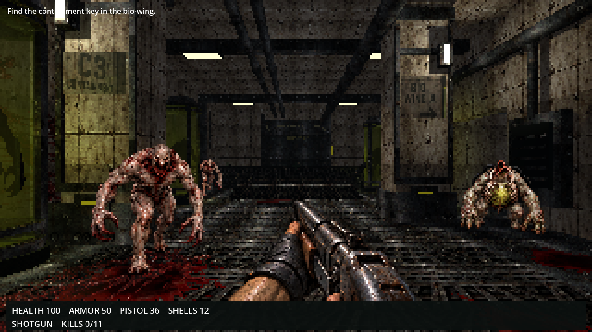

EYESORE / BUILD TWO / ART STYLE COMPARISON
The Pale Ward — art style review
The latest requested treatment is the approved artwork's style: shared coarse pixels, painted grey-brown shading, dark metal, and restrained yellow-green light. The current HUD and music are retained.
The original concept preview and actual gameplay captures are paired for review of that treatment. The target concerns art style across the game; it does not prescribe the exact opening camera. These captures do not establish a match or acceptance.
Both comparison frames have equal displayed dimensions. Images keep their aspect ratio with no crop and use nearest-neighbour display scaling. Click either image for the full unchanged PNG.
Original concept review · Preserved earlier comparison · Source SHA256 and byte checks
Approved style reference — original concept preview

Actual gameplay — current implementation


Review pending. No visual match or acceptance is claimed.
Actual gameplay captures — full unchanged PNGs
All current captures remain available here when JavaScript is disabled.